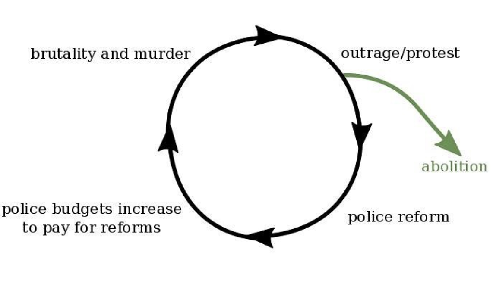

DEFUND POLICE

What is defunding the police?
"The calls to defund and dismantle - they mean different things to different people. Some want a partial defunding. Some want to dismantle the current system and come up with a whole new approach to public safety...The system is failing. It's failing to keep people safe. It's failing to keep people alive. And it's resulting in disproportionate impacts on black and brown people...We did de-escalation trainings - right? - and tactics. We did the implicit bias trainings. We did try to put more money into the academy so that we can diversify the applicants, the cadets. We did institute and implement body cams, right? We did all the things that people are calling to do. And none of it saved George Floyd." Listen to the entire story from NPR by clicking this box.
Education on defunding
Introduction to transformative justiceWhy There's A Push To Get Police Out Of Schools
Confessions of a Former Bastard Cop
Nearly $1 Billion Is Shifted From Police in Budget That Pleases No One
Alternatives to calling the police...
When someone is having a mental health crisisIn your city
To address community conflict
When a trans person is in crisis (the only crisis hotline committed to NEVER calling the police)
Personal Actions
- Don't feel obligated to defend property, especially corporate "private" property. Before confronting someone or calling the police ask yourself if anyone is being hurt or endangered by property "theft" or damage. If the answer is no then let it be.
- If something of yours is stolen and you need to file a report for insurance or other purposes, consider going to the police station instead of bringing cops into your community. You may inadvertently be putting someone in your neighborhood at risk.
- If you observe someone exhibiting behavior that seems "odd" to you, don't assume that they are publicly intoxicated. A traumatic brain injury or similar medical episode may be occuring. Ask if they are OK, if they have a medical condition, and if they need assistance.
- If you see someone pulled over with a car trouble, stop and ask if they need help or if you can call a tow truck for them. If the police are introduced to such a situation, they may give punitive and unnecessary tickets to people with car issues, target those without papers, or worse.
- Keep a list of community resources like suicide hotlines (keep in mind some of these hotlines can send police to intervene without permission so vet your list). When police are contacted to "manage" such situations, people with mental illness are 16x more likely to be killed by cops than those without mental health challenges.
- Check your impulse to call the police on someone you believe looks or is acting "suspicious." Is their race, gender, ethnicity, class, or housing situation influencing your choice? Such calls can be death sentences for many people.
In NYC
| Crisis Hotline | 1 (800) 854-7771 |
| NYC Well/ Crisis Mobile Response Team | 1 (888) 692-9355 |
| Boys and Girls Town National Abuse Hotline | 1 (800) 448-3000 |
| NY State Central Register (SCR) Child Abuse & Maltreatment Hotline | 1 (800) 342-3720 |
| Emergency Foodline | 1 (866) 888-8777 |
| New York State Domestic and Sexual Violence Hotline | 1 (800) 942-6906 |
| National Teen Dating Abuse Hotline | 1 (866) 331-9474 |
| Crime Victims Hotline/td> | 1 (866) 689-HELP (4357) |
| Rape & Sexual Assault Hotline | 1 (212) 227-3000 |
| NYC- 311 Emergency Dispatch (DISPATCH WITHIN THE HOUR: NOT POLICE) | 3-1-1 |
| SCO Family of Services | 1 (718) 674-7800 |
| Ali Forney Center | (212) 206-0574 |
| The Door | 1 (212) 941-9090 |
| Safe Horizon Streetwork | 1 (212) 695-2220 |